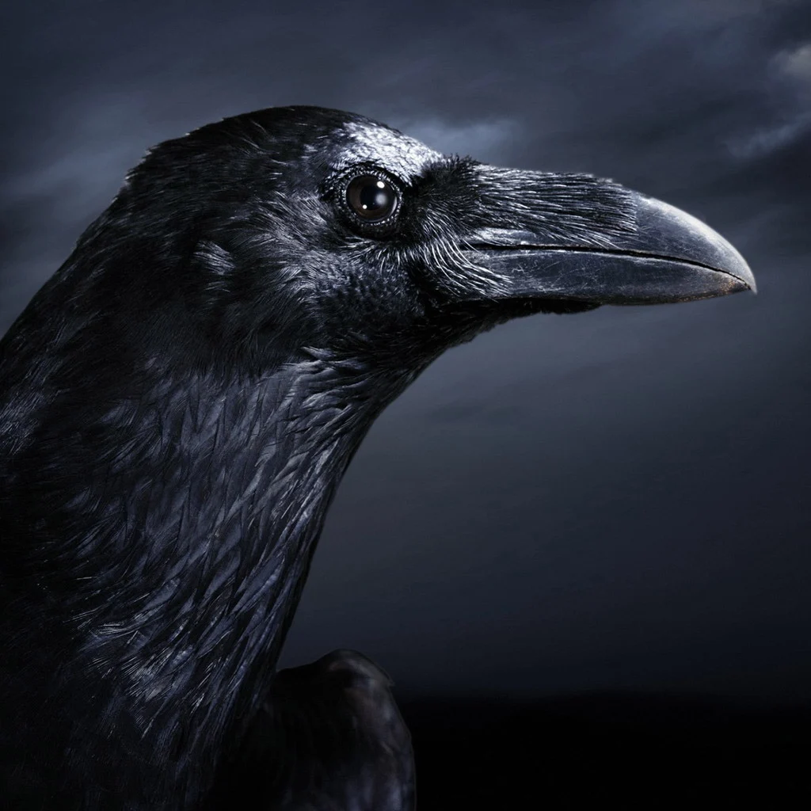
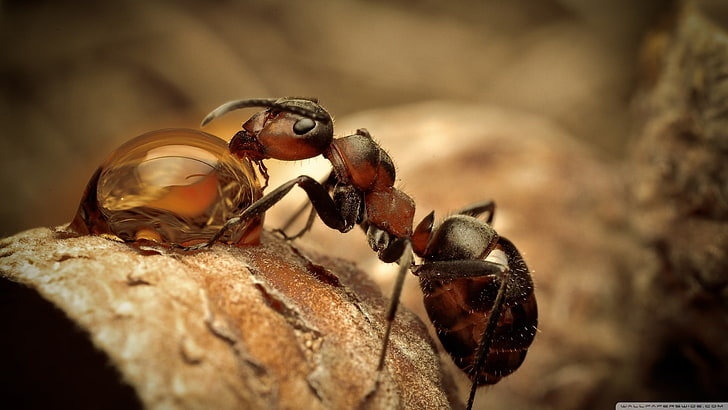

ناقة سيدنا "صالح" عليه السلام
كانت معجزة من الله عز وجل لقوم "صالح" لكنهم ذبحوها فعذبهم الله.
أقرأ أكثر...
حوت سيدنا "يونس" عليه السلام
قام بابتلاع سيدنا يونس و اخرجه عند شجرة اليقطين لأنه كان من المسبحين.
أقرأ أكثر...

نملة سيدنا "سليمان" عليه السلام
نصحت جنسها بالاختباء في وادي النمل حتي لايتأذي حد من سيدنا "سليمان"
أقرأ أكثر...